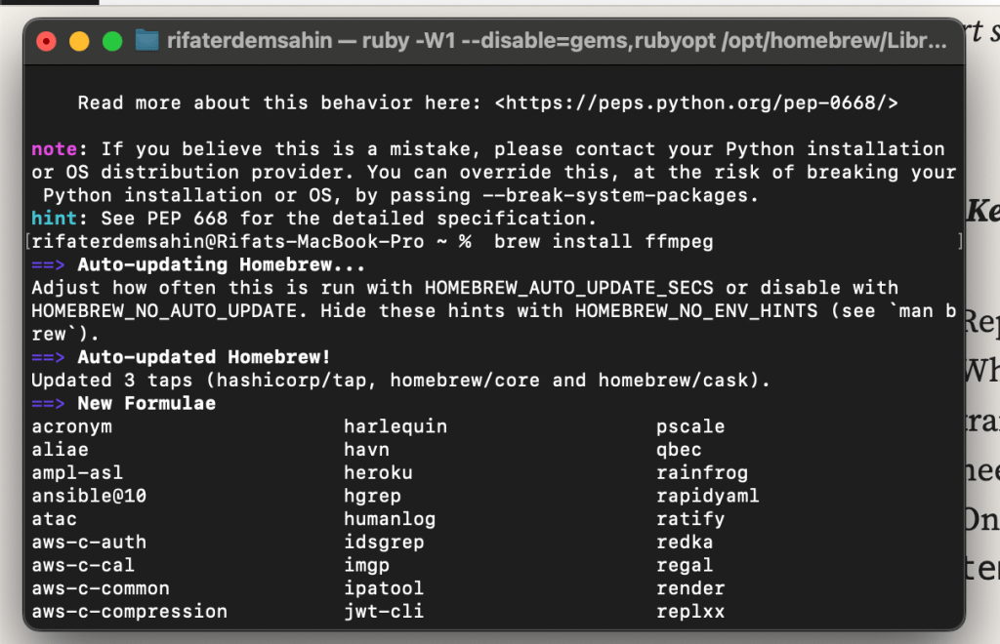
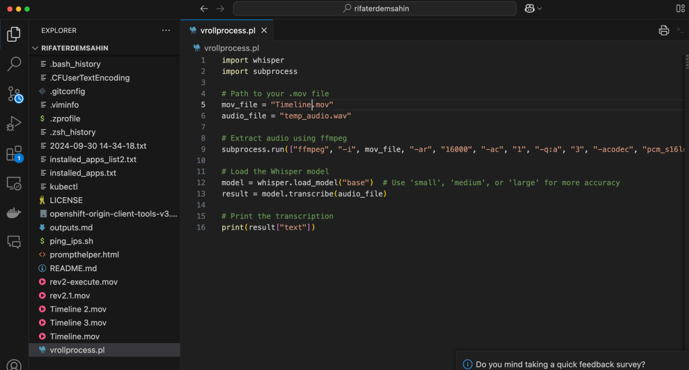
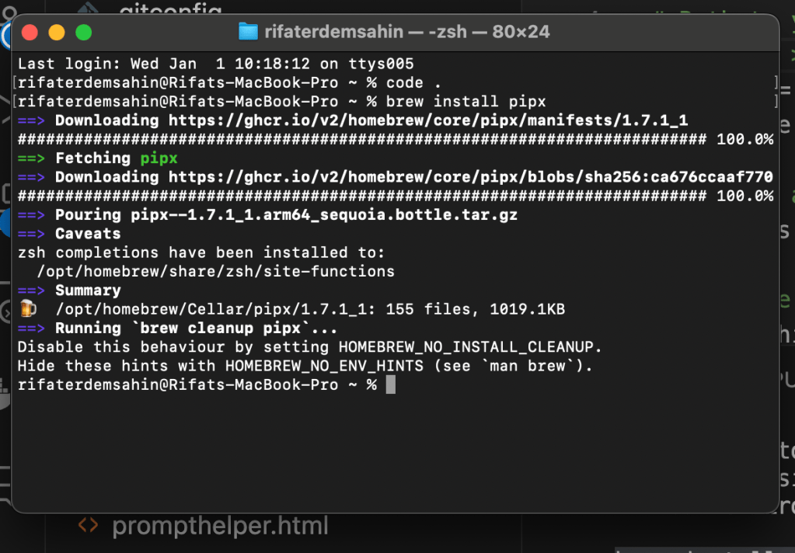
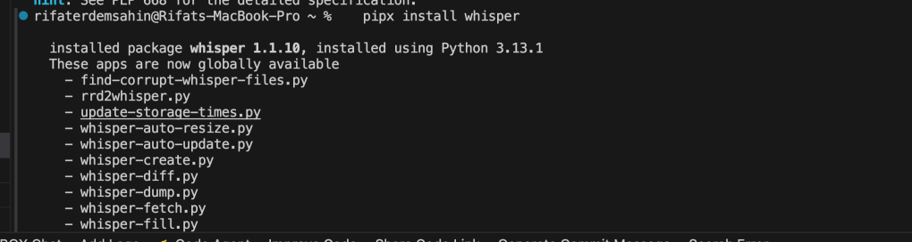

🎙️ Transcribe Audio from .mov Files Locally with OpenAI Whisper
Whisper, a state-of-the-art speech recognition library by OpenAI, makes it incredibly easy to transcribe audio from .mov files on your local machine. Follow this step-by-step guide to get started! 🚀
1. 🛠️ Install Required Libraries
Before diving in, ensure you have Python installed. Then, use the following command to install the necessary libraries:
pip install whisper ffmpeg-python
💡 Pro Tip: You may also need to install ffmpeg to process .mov files. Install it via your package manager:
-
macOS:
brew install ffmpeg -
Linux:
sudo apt-get install ffmpeg

2. 📝 Convert and Transcribe the **.mov** File
Use the following Python script to extract audio from your .mov file and transcribe it:
import whisper
import subprocess
Path to your .mov file
mov_file = "your_file.mov"
audio_file = "temp_audio.wav"
Extract audio using ffmpeg
subprocess.run(["ffmpeg", "-i", mov_file, "-ar", "16000", "-ac", "1", "-q:a", "3", "-acodec", "pcm_s16le", audio_file])
Load the Whisper model
model = whisper.load_model("base") # Use 'small', 'medium', or 'large' for more accuracy
result = model.transcribe(audio_file)
Print the transcription
print(result["text"])
🛑 Pauses to Check
-
After audio extraction: Ensure the file
temp_audio.wavis created successfully. -
Model loading: Whisper may take a moment to load the model, especially for the first time.

3. 💡 Key Notes
-
Replace
"your_file.mov"with the actual path to your.movfile. -
Whisper supports multiple languages and model sizes for improved transcription accuracy. Experiment with these options for your needs.
-
Once transcription is done, you can safely delete the
temp_audio.wavfile to save space.
🔗 Connect with Me
-
💼 LinkedIn: https://www.linkedin.com/in/rifaterdemsahin/
-
🐦 Twitter: https://x.com/rifaterdemsahin
-
🎥 YouTube: https://www.youtube.com/@RifatErdemSahin
-
💻 GitHub: https://github.com/rifaterdemsahin
Happy Transcribing! 🎉
Semblance
rifaterdemsahin@Rifats-MacBook-Pro ~ % python3 vrollprocess.pl
Traceback (most recent call last):
File "/Users/rifaterdemsahin/vrollprocess.pl", line 1, in
import whisper
ModuleNotFoundError: No module named 'whisper'
rifaterdemsahin@Rifats-MacBook-Pro ~ %
It looks like you're trying to run a Python script but encountered an error because the whisper module isn't installed. You can fix this by installing the module. Here's how you can do it:
-
Open your terminal.
-
Run the following command to install the
whispermodule:
pip install whisper
After installing, try running your script again. If you encounter any other issues, feel free to ask!
pipx


Local environment python and davinci resolve issues > move to github codespaces
Imported from rifaterdemsahin.com · 2025